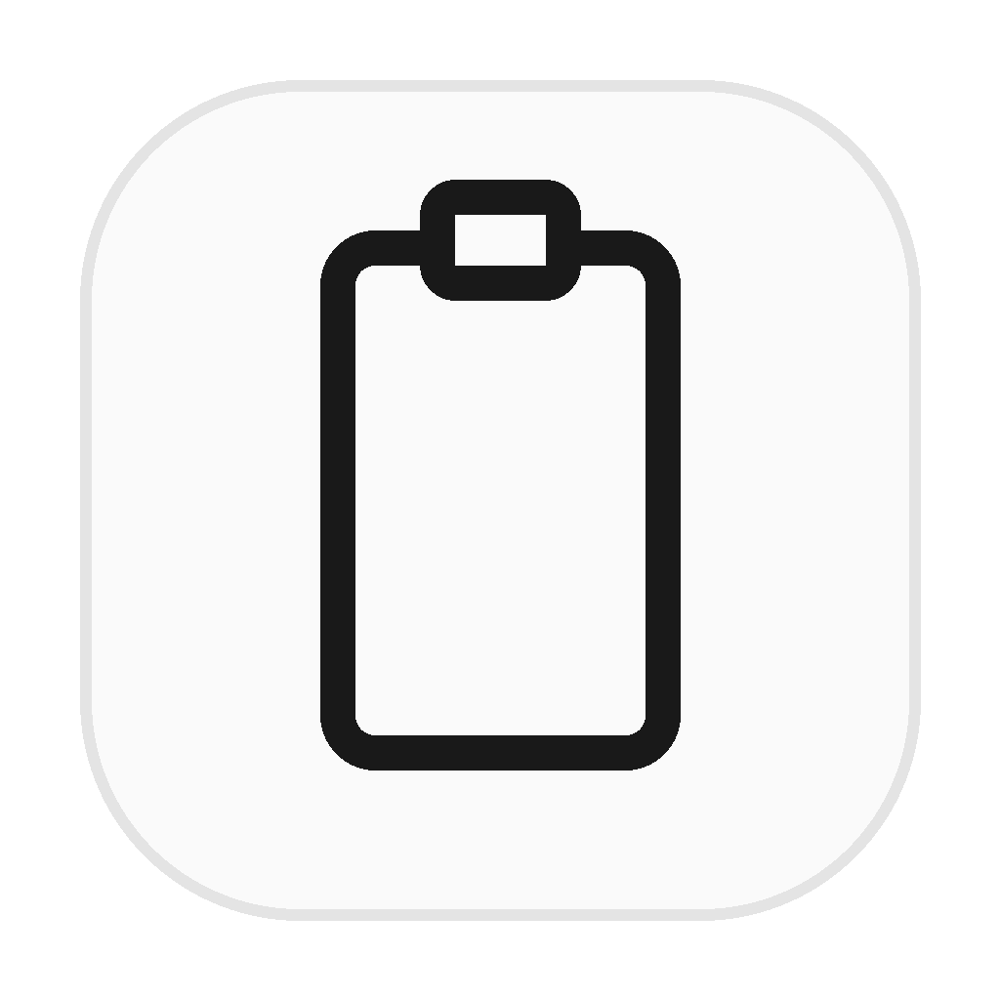
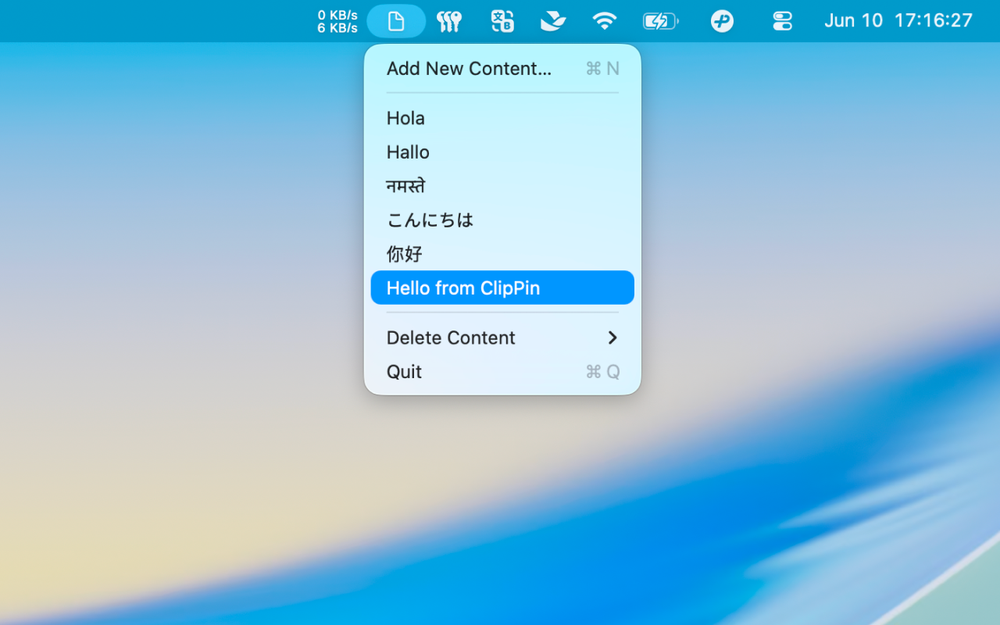

Menu Bar Snippets
Keep frequently used plain text snippets in the macOS menu bar.

ClipPin
Keep frequently used plain text snippets in the macOS menu bar.
Paste and save clean text without rich formatting, images, or attachments.
Snippets stay on your Mac. No account, no cloud sync, no network access.